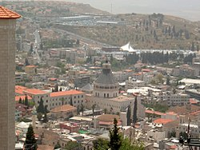
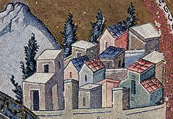

Nazareth
Nazareth is a city in Israel with biblical history. In
the old city, the domed Basilica of the Annunciation is, some believe, where the angel Gabriel told Mary
she would bear a child. St. Joseph’s Church is said to be the site of Joseph’s carpentry workshop. The
underground Synagogue Church is reputedly where Jesus studied and prayed. Nazareth Village, an open-air
museum, reconstructs daily life in Jesus’ era

Nazareth, or Natsrat as its name is pronounced in Hebrew,
is the cradle of Christianity, the city where, according to tradition, the angel Gabriel told Mary that
she would conceive by the power of the Holy Spirit, and the place where Jesus spent his childhood and
youth. Nazareth, in the lower Galilee, is located in the heart of a valley surrounded by mountains that
embrace several of the most important Christian sites in the world. This is a city of religion and
faith, of spirituality and holiness, but also a city with a rich history, fascinating archeology, modern
culture and Middle Eastern charm.

Among the many other churches in Nazareth are the Mensa Christi Church, the Maronite
Church, St. Gabriel’s Church and the Salesian Church. The Old City also has important buildings from the
Ottoman period, including the Saraya, or Government House, built by Daher el Omar, the governor of the
Galilee in the 18th century, and the White Mosque, which is used today as a house of prayer and an
education and culture center. The White Mosque also houses a museum with exhibits that document
Nazareth’s history.
No tour of Nazareth’s Old City would be complete without a visit to the local market, which has become a
popular and well-known attraction thanks to the colorful stalls and the variety of merchandise. In the
market you can enjoy a visual feast of fashionable fabrics, taste the spices and local foods, and by
artwork and souvenirs. All the sounds, sights, smells and flavors promise an authentic Middle Eastern
experience.